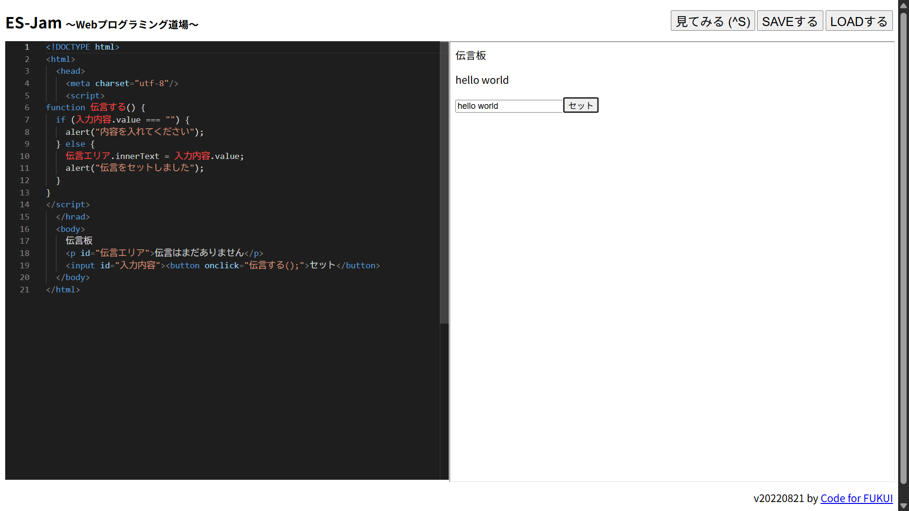

3-2 JavaScript体験：伝言プログラムを作る

伝言板
1.内容
学習した内容を説明する文章を
自分で考えて作成する（50文字以上．100文字程度を推奨．※生成AIを使ってはいけない）
Javascriptでテキストボックスとボタンを追加して、ボタンを押したときにテキストボックスの中身を伝言板に反映し、そのことをアラートで通知されるようにした。
また、テキストボックスの中身が空欄の時は変更せずにアラートで警告するようにした。
2.感想
学習した内容を実践したときに自分が感じた感想を
自分で考えた文章で作成する（50文字以上．100文字程度を推奨．※生成AIを使ってはいけない）
プログラムと画面上の対応する部分を学びながら1からプログラムを作成していくのは楽しかった。
また、ユーザーが意図しない使い方をすることも考えて対策するなど、実際のプログラマーの仕事はプログラムを書くことだけでないことも分かった。
今回は自分のPC上だけで完結する伝言板だったが、実際にインターネット上にある複数人のユーザーが書き込んだものが見れる掲示板などの仕組みも学んでみたいと思った。